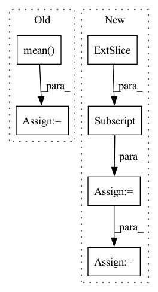

Pattern ID :22760
Before Change
metric += sklearn_metrics.mean_squared_error(y_true_los, y_pred_los)
elif metrics_strategy == "MAPE":
metric += sklearn_metrics.mean_absolute_percentage_error(y_true_los, y_pred_los)
metric += np.mean(
np.abs(y_true_outcome - y_pred_outcome)
* max_visits
* np.array(list(map(lambda x: sigma_func(x), y_true_los)))
)
if verbose:
print("LOS Score:", metric)
return metric
After Change
for i in range(num_records):
cur_outcome_pred = y_pred_outcome[i]
cur_los_pred = y_pred_los[i]
cur_gt = y_true[i, :]
cur_outcome_true = cur_gt[0]
cur_los_true = cur_gt[1]
prediction_result = calculate_outcome_prediction_result(
cur_outcome_pred, cur_outcome_true
)
metric.append(In pattern: SUPERPATTERN
Frequency: 3
Non-data size: 6
Instances Fragment ID: 72205338
Project Name: yhzhu99/covid-ehr-benchmarks
Commit Name: fc9fcafdeae37b009acb4acf87682f0d86306e69
Time: 2022-06-29
Author: yhzhu99@gmail.com
File Name: app/core/evaluation/covid_metrics.py
M Class Name: AnonimousClass
N Class Name: AnonimousClass
M Method Name: multitask_los_metric(6)
N Method Name: multitask_los_metric(7)
M Parent Class:
N Parent Class:
M File Name: app/core/evaluation/covid_metrics.py
N File Name: app/core/evaluation/covid_metrics.py
M Start Line: 83
M End Line: 116
N Start Line: 119
N End Line: 142
Before Change
list_wer = torch.tensor(
[self.cal_wer(i, j).item() for i, j in zip(predicts, targets)]
)
wer = torch.mean( list_wer)
if batch_idx % 100 == 0:
self.log_output(predicts[0], targets[0], wer)
After Change
def validation_step(self, batch: Tensor, batch_idx: int):
inputs, input_lengths, targets, target_lengths = batch
targets_ctc = targets[:, 1:-1]
outputs, output_lengths = self(inputs, input_lengths)
loss = self.criterion(
outputs.permute(1, 0, 2), targets_ctc, output_lengths, target_lengths
)
self.log("test loss", loss)
if batch_idx % self.log_idx == 0:
label_sequences, predict_sequences, wer = self.get_wer(
targets_ctc, inputs, input_lengths
)
self.log_output(predict_sequences[0], label_sequences[0], wer) Fragment ID: 72205350
Project Name: manhph2211/vistt
Commit Name: 742be9424d91058a3c3e25adc4db742534fffab3
Time: 2022-08-30
Author: manhph5@vingroup.net
File Name: VASR/local/src/engine/trainer.py
M Class Name: ConformerModule
N Class Name: ConformerModule
M Method Name: validation_step(3)
N Method Name: validation_step(3)
M Parent Class: BaseModel
N Parent Class: pl.LightningModule
M File Name: VASR/local/src/engine/trainer.py
N File Name: VASR/local/src/engine/trainer.py
M Start Line: 72
M End Line: 103
N Start Line: 106
N End Line: 126
Before Change
list_wer = torch.tensor(
[self.cal_wer(i, j).item() for i, j in zip(predicts, targets)]
)
wer = torch.mean( list_wer)
if batch_idx % 100 == 0:
self.log_output(predicts[0], targets[0], wer)
After Change
def test_step(self, batch: Tensor, batch_idx: int):
inputs, input_lengths, targets, target_lengths = batch
targets_ctc = targets[:, 1:-1]
outputs, output_lengths = self(inputs, input_lengths)
loss = self.criterion(
outputs.permute(1, 0, 2), targets_ctc, output_lengths, target_lengths
)
self.log("test loss", loss)
if batch_idx % self.log_idx == 0:
label_sequences, predict_sequences, wer = self.get_wer(
targets_ctc, inputs, input_lengths
)
self.log_output(predict_sequences[0], label_sequences[0], wer) Fragment ID: 72205345
Project Name: manhph2211/vistt
Commit Name: 742be9424d91058a3c3e25adc4db742534fffab3
Time: 2022-08-30
Author: manhph5@vingroup.net
File Name: VASR/local/src/engine/trainer.py
M Class Name: ConformerModule
N Class Name: ConformerModule
M Method Name: test_step(3)
N Method Name: test_step(3)
M Parent Class: BaseModel
N Parent Class: pl.LightningModule
M File Name: VASR/local/src/engine/trainer.py
N File Name: VASR/local/src/engine/trainer.py
M Start Line: 105
M End Line: 136
N Start Line: 128
N End Line: 148